Relevance Vector Machine¶
Relevance Vector Machine (RVM) trains a Generalized Linear Model yielding sparse representation (i.e., many of the basis functions are not used at the end). The implementation in BEST is the Multi-dimensional Relevance Vector Machine (MRVM) as described in our paper. It uses the Generalized Singular Value Decomposition to train the model, which is considerably more stable than relying to Cholesky decompositions. This is achieved via the best.linalg.GeneralizedSVD class.
As already said, we start with a Generalized Linear Model (see (1)):
(1)

- where
(2)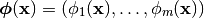
forms a Basis. The Relevance Vector Machine trains the model based on a set
of  (noisy) observations of a
(noisy) observations of a  dimensional process:
dimensional process:
(3)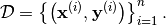
It assigns a Gaussian noise with precision (inverse noise)  to the observations (this defines the likelihood) and the following
prior on the weight matrix
to the observations (this defines the likelihood) and the following
prior on the weight matrix  :
:
(4)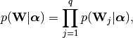
(5)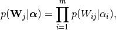
(6)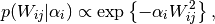
where 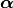 is a set of  hyper-parameters,
one for each basis function.
The characteristic of (6) is that as if
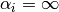, then the basis function
hyper-parameters,
one for each basis function.
The characteristic of (6) is that as if
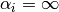, then the basis function
 can be removed for the model.
The parameters 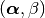 are found by
maximizing the evidence of the data
can be removed for the model.
The parameters 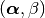 are found by
maximizing the evidence of the data  .
.
The model is realized via the class best.rvm.RelevanceVectorMachine which is described below:
- class best.rvm.RelevanceVectorMachine¶
The Relevance Vector Machine Class.
- __init__()¶
Construct the object. It does nothing.
- set_data(PHI, Y)¶
Sets the data
to the model.PHI is the design matrix 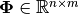, where:
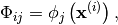
and Y is the data matrix 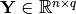 in which 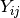 is the
 -th dimension of the output
of the
-th dimension of the output
of the  -th observed input point.
-th observed input point.Parameters: - PHI (2D numpy array) – The design matrix.
- Y (2D numpy array) – The data matrix.
- initialize([beta=None[, relevant=None[, alpha=None]]])¶
Initialize the algorithm.
Parameters: - beta (float) – The initial beta. If None, then we use the inverse of the observed variance of the data.
- relevant (array of int) – A list of the basis function with which we wish to start the algorithm. For example, if relevant = [2, 5, 1], then basis functions 2, 5 and 1 are in the model. The rest have a
 that is equal to
that is equal to  . If None, then the algorithm will start with a single basis function, the one whose inclusion maximizes the evidence.
. If None, then the algorithm will start with a single basis function, the one whose inclusion maximizes the evidence. - alpha (1D numpy array.) – The values of the ‘s of the initial relevant basis functions specified by relevant.
- train([max_it=10000[, tol=1e-6[, verbose=False]]])¶
Train the model.
Parameters: - max_it (int) – The maximum number of iterations of the algorithm.
- tol (float) – The convergence tolerance. Convergence is monitored by looking at the change between consecutive ‘s.
- verbose (bool) – Print something or not. The default is False.
- get_generalized_linear_model(basis)¶
Construct a Generalized Linear Model from the result of the RVM algorithm.
Parameters: basis (best.maps.Function.) – The basis you used to construct the design matrix PHI.
- __str__()¶
Return a string representation of the object.
A Simple 1D Example¶
Here we demonstrate how the model can be used with a simple 1D example. We first start with a basis based on Squared Exponential Covariance (see Squared Exponential Covariance) constructed as described in Constructing Basis from Covariance Functions:
import numpy as np
import matplotlib.pyplot as plt
import best
# Number of observations
num_obs = 100
# The noise we will add to the data (std)
noise = 0.1
# Draw the observed input points randomly
X = np.random.randn(num_obs)
# Draw the observations
Y = np.sin(X) / (X + 1e-6) + noise * np.random.randn(*X.shape)
# The covariance function
k = best.maps.CovarianceFunctionSE(1)
# Construct the basis
phi = k.to_basis(hyp=2.)
# Construct the design matrix
PHI = phi(X)
# Use RVM on the data
rvm = best.rvm.RelevanceVectorMachine()
rvm.set_data(PHI, Y)
rvm.initialize()
rvm.train()
print str(rvm)
This will result in an output similar to:
Relevant Vector Machine
Y shape: (100, 1)
PHI shape: (100, 100)
Relevant: [ 0 98 59 16 58 65 2 57 68 84 36 93 55 83 3 45]
Alpha: [ 1.75921502 0.04998139 4.35007167 1.87751651 1.12641185
0.10809376 0.72398214 19.07217688 0.23016274 0.02142343
0.01976957 2.5164594 1.55757032 0.05801807 0.06522873
0.61174863]
Beta: 209.805579349
Now, you may get a Generalized Linear Model from the model and plot its mean and predictive variance:
f = rvm.get_generalized_lineal_model(phi)
plt.plot(X, Y, '+')
x = np.linspace(-10, 10, 100)
fx = f(x)
plt.plot(x, fx, 'b', linewidth=2)
plt.plot(x, np.sin(x) / (x + 1e-6), 'r', linewidth=2)
# Plot +- 2 standard deviations
s2 = 2. * np.sqrt(f.get_predictive_variance(x))
plt.plot(x, fx + s2, 'g')
plt.plot(x, fx - s2, 'g')
plt.plot(X[rvm.relevant], Y[rvm.relevant], 'om')
plt.show()
You should see something like:
The fit of RVM on the sample problem with SE basis centered on the data. Thre magenta disks show the relevant vectors that are finally kept. The blue symbols are the observed data. The red line is the true function. The blue line is predictive mean of the Generalized Linear Model. The green lines are the borders of the 95% confidence interval about the mean.
Now, let’s do the same problem with a Generalized Polynomial Chaos basis, orthogonal with respect to a uniform distribution on 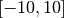 and of total degree 20:
phi_gpc = best.gpc.OrthogonalPolynomials(20, left=-10, right=10)
PHI_gpc = phi_gpc(X)
rvm.set_data(PHI_gpc, Y)
rvm.initialize()
rvm.train()
f_gpc = rvm.get_generalized_linear_model(phi_gpc)